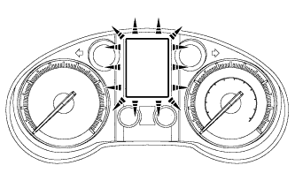

METER / GAUGE SYSTEM > OPERATION CHECK |
| INSPECT INDICATOR/WARNING LIGHT |
Check the following indicators and warning lights.
| Indicator/Warning Light | Switch Condition | Specified Condition |
| BRAKE warning light | Engine switch off → on (IG) | Comes on for 3 seconds |
| ABS warning light | ||
| SLIP indicator light | ||
| VSC OFF indicator light | ||
| CRAWL indicator light*1 | ||
| Downhill assist control indicator light*2 | ||
| KDSS indicator light | ||
| Eco driving indicator light | ||
| PCS indicator light*3 | ||
| AFS OFF indicator light | ||
| Master warning light | ||
| SRS warning light | Engine switch off → on (IG) | Comes on for 6 seconds |
| CHARGE warning light | Engine switch off → on (IG) |
|
| MIL |
| INSPECT SPEEDOMETER |
Connect the intelligent tester to the DLC3.
Turn the engine switch on (IG).
Turn the intelligent tester on.
Enter the following menus: Powertrain / Engine and ECT / Data List.
| Standard Indication | Acceptable Range |
| 20 km/h | 21 to 25 km/h |
| 40 km/h | 41.7 to 46.2 km/h |
| 60 km/h | 62.7 to 67.2 km/h |
| 80 km/h | 83.4 to 88.4 km/h |
| 100 km/h | 104.3 to 109.3 km/h |
| 120 km/h | 125.1 to 130.6 km/h |
| 160 km/h | 166.2 to 173.2 km/h |
| 180 km/h | 186.9 to 194.5 km/h |
Check the deflection width of the speedometer indicator.
| INSPECT TACHOMETER |
Connect a tune-up tachometer and start the engine.
Compare the test results with the tachometer indicator.
| Standard Indication (rpm) | Acceptable Range Data in ( ) is for Reference |
| 700 | 630 to 770 |
| 1000 | (900 to 1100) |
| 2000 | (1850 to 2150) |
| 3000 | 2800 to 3200 |
| 4000 | (3800 to 4200) |
| 5000 | 4800 to 5200 |
| 6000 | (5750 to 6250) |
| INSPECT METER/GAUGE |
Connect the intelligent tester to the DLC3.
Perform the Active Test (Click here).
| INSPECT WARNING/INDICATOR LIGHT |
Connect the intelligent tester to the DLC3.
Perform the Active Test (Click here).
| INSPECT MULTI-INFORMATION DISPLAY |
|  |
Connect the intelligent tester to the DLC3.
Perform the Active Test (Click here).